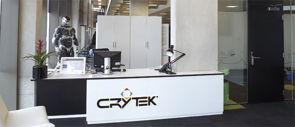

I just got hired by Crytek UK!
Feb 4, 2012 · CommentsGames developmentGeneral

I can finally say it out loud: I just got hired by Crytek UK as a junior programmer! In case you were wondering, yes, they are the same guys that pulled the Crysis saga together using their jaw dropping CryEngine, and now they"re working on games like Homefront 2. Their British studio is based in Nottingham, so I moved here a couple of days ago and I really like the city so far.
This is, without any doubts, a dream job and I couldn't be happier about it, it's what I've been aiming for since I started University. I couldn't possibly have predicted this would happen a few months ago. Maybe a little mobile games company crossed my mind, but a huge triple A company like Crytek? No way. As you can see, the office is quite amazing and the people here are most thoughtful and friendly.
I"d like to thank everyone who's helped me from professors to team mates without forgetting about family and friends. A new life full of changes and exciting experiences lies ahead! I"ll try to update the blog as often as I can. Of course I"ll post personal games reviews, game design and games programming articles.